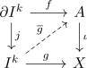
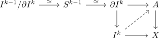
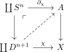

attaching n-cells and n-1 connected inclusion
Proposition
Let $A$ be a topological space, $X$ given by attaching cells of dimension $n \geq d$
\begin{displaymath}
\begin{tikzcd}
|[label={[label distance=-2mm]-45:\ulcorner}]|
\coprod S^{n-1} \arrow[]{r}{} \arrow[]{d}{}& A \arrow[]{d}{}
D^n \arrow[]{r}{}& X
\end{tikzcd}
\end{displaymath}Then the inclusion
Proof
$d = n$
it suffices to show that for every commutative square

admits a lift where
- the top triangle commutes strictly
- the bottom diagram commutes up to homotopy relative to $\partial I^k$
injectivity for $k < n- 1$
Using

In fact the following conditions are equivalent
- $[f] \in \pi_{k-1}(A)$ is given by the zero element (TODO)
surjectivity for $k < n$
note that a lift $\overline{g}$ is a representative of a preimage of $h: S^{k-1} \rightarrow X$ where the boundary is constant, i.e. factors
proof
induction basis
$k = 0$, $n = 1$
Then we get
\begin{displaymath}
\begin{tikzcd}
\empytset \arrow[]{r}{} \arrow[]{r}{}& A \arrow[]{d}{}\\
\{*\} \arrow[]{r}{} \arrow[]{ru}{}& X
\end{tikzcd}
\end{displaymath}always has a solution, as $[0,1]$ is pathconnected and $X$ is given by attaching an intervall to some point
induction step
Given

it suffices to pick an open collar neighbourhood $C$ of $A$ in $X$
Consider $\chi^{-1}(C)$. For each $\alpha$ choose an open subset, e.g. an scaled open disc of $D^{n+1}$
Such that $\coprod_{\alpha} V_{\alpha} \cup \chi^{-1}(C)$ is an open cover of $\coprod_{\alpha} D^{-+1}$. Set
Note that $\chi$ is by definition a homeomorphism pushout and homeomorphism of the interior
Then
is an open cover of $X$
Consider
By open covering of the disk induces closed decomposition we get a decomposition into cubes
such that each of these lies in a single elemnet of $g^{-1}[U]$. This gives rise to a refined CW structure of $I^k$
Do a subinduction on the new CW-structure of $I^k to show that if $g$ maps \mathrm{Sk}_l(I^k) \coprod \partial I^k$ to $C$, then $g$ is homtoopic relative to $\partial I^k$ to a map $\overline{g}$ which sends the \(l+1\)-skeleton $\mathrm{Sk}_{l+1}(I^k)$ to $C$
bookkeeping
consider $\sigma: \{1,...,k\} \rightarrow \{1,...,r-1\} \times \{0,1\} \cup \{(0,1)\}$
and set
Then define
proof by induction on $l(\sigma)$
base step, $l(\sigma) = 0$
Then we consider all points in the interior:
Is $g$ maps $I^k_{\sigma}$ to $C$, then pick a constant homotopy on that point$ Else $g$ maps $I^k_{\sigma}$ to $U_{\alpha}$, each as $U_{\alpha}$ is path connected, so we may homotopy $g_{I^k_{\sigma}$ to a point in $C$
For a point on the boundary, we take the constant homtoopy
then we use the Homotopy Extension Property of $\parital I^k \coprod (I^k)^{\sigma} \rightarrow I^k$ for
Then we get a homotopy
relative to $\partial I^k$ such htat
induction step
Suppose
takes values in $C$
Consider $I^k_{\sigma}$ with $l(\sigma) = l + 1$
If $I^k_\sigma \rightarrow C$, then we may chooes the constant homotopy. Otherwise, there is a unique $\alpha$ such that $g(I^k_{\sigma}) \subseteq U_{\alpha}$ (as the decomposition is such that each cube lies in a single $U_\alpha$ )
Then by assumption
as the intersection is a thickend sphere.
After a choice fo basepoint, we can consider
as an element in $\pi_l(S^{n-1})$
By inductive assumption, $l < n$, so $\pi_l(S^{n})$ is trivial by induction (the map $* \rightarrow S^l$ is ? connected) then by trivial element in a homotopy group and extension we get an extension
extends to a map $I^k_{\sigma} \rightarrow C \cap U_{\alpha}$
As $U_{\alpha}$ is homeomorphic to a convex subset of $\mathbb{R}^n$, we may take a linear homotopy from $g_{\vert I^k_{\sigma}$ to $\overline{g}_{\vert I^k_{\sigma}$. This is a homtoopy rel $\partial I^k_{\sigma}$ as
Thsi gives a homotopy
to a map with values in $C$
Then by using the homotopy extension property this extends to a homotopy $g \simeq \overline{g}$ relative to \partial I^k \coprod (I^k)^(l))$ such that
Note that we may use the HEP for eahc higher dimensional coube as a map
Then we get
where
is homotopic as $A \hookrightarrow C$ is a deformation retract.
general case
finite
follows from
infinite
corollary of:
as $\pi_k(\mathrm{Sk}_n)$ becomes eventually isomorphic to $\pi_k(X)$